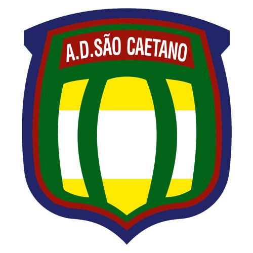
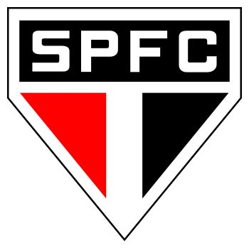
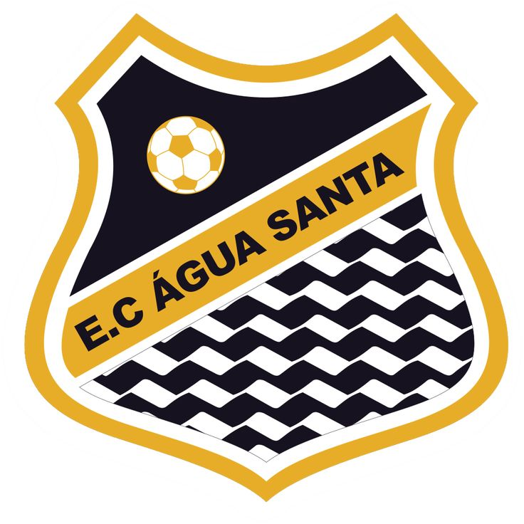

Olá! Eu sou o Izael Junior
Um jovem sonhador de 22 anos, que acredita que
não há limites para fazer o que é certo.
A maior parte da minha vida, foi desenvolvida
através do esporte, especificamente o futebol.
Como todos os outros ciclos em nossa vida, nada
é para sempre, há ciclos que se iniciam, e que se
encerram.
Menos o seu legado na Terra, as pessoas podem
até te esquecer, porém o que você fez será
marcado para sempre!
Futebol

2006-2008

2008-2010
2010-2013

2013-2016
2019
2020-2021